白盒测试又称为透明盒测试、结构测试，它基于程序的内部逻辑结构进行测试，而不是程序的功能（黑盒测试）。因此，进行白盒测试时，测试人员需要了解程序的内部逻辑结构，根据使用的编程语言设计测试用例。白盒测试可用于单元测试、集成测试和系统测试。白盒测试的方法包括基本路径法、逻辑覆盖法、程序插桩法。
基本路径法
基本路径法概述
基本路径法是一种将程序的流程图转化为程序控制流图，并在程序控制流图的基础上，分析被测程序控制构造的环路复杂性，导出基本可执行路径集合，从而设计测试用例的方法。
使用基本路径法设计的测试用列需要确保被测程序中的每条可执行语句至少被执行一次。
使用基本路径法设计测试用例主要包括4个步骤，具体如下。
1．画出流程图
首先需要分析被测程序的源代码，并画出程序的流程图。
2．画出控制流图
控制流图是描述程序控制流的一种图示方法，由程序流程图转化而来。如果测试的源程序的代码简洁，也可以直接通过分析源程序的代码画出控制流图。
在画程序的控制流图时，使用圆圈表示一条或多条无分支的语句；使用箭头表示控制流方向。程序中常见的控制流图如下所示。
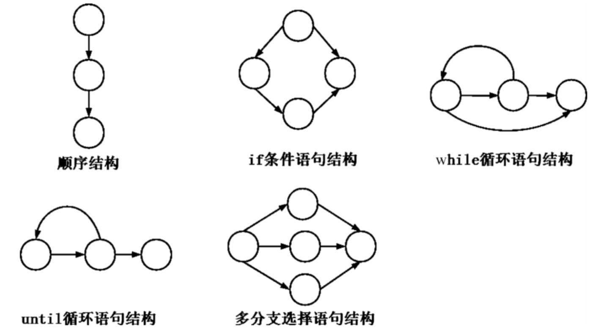
|
|
图中，圆圈称为控制流图的节点，通常表示程序流程图中的矩形或菱形，箭头称为控制流图的边或连接，由边和节点限定的范围称为区域。
3．计算程序的圈复杂度⭐
圈复杂度是一种代码复杂度的衡量标准，用来衡量一个模块的复杂程度。通过计算程序的圈复杂度可以得到程序基本的独立路径数目，从而确定测试用例的数目。
计算程序圈复杂度的方法有3种，具体如下：
- 使用公式计算：V(G)=E-N+2，其中V(G)表示程序的圈复杂度，E表示控制流图中边的数量，N表示控制流图中节点的数量。
- 使用公式计算：V(G)=P+1，P表示控制流图中判定节点的数量。在控制流图中，当一个节点分出2条或多条指向其他节点的边时，这个节点就是一个判定节点。
- 程序的圈复杂度等于控制流图中的区域数量。
图中，一共有10条边、8个节点、4个区域，其中判定节点有3个，分别是1、2、4。
如果使用 V(G)=E-N+2 计算圈复杂度，则 V(G)=10-8+2=4；
如果使用 V(G)=P+1 计算圈复杂度，则 V(G)=3+1=4；
由于计算区域包括控制流图外部的区域，所以区域数量为4，圈复杂度也为4；
由此可见，通过这3种方法计算出的圈复杂度的结果都是相同的。
4．设计测试用例
根据计算出的程序圈复杂度导出基本可执行路径集合，从而设计测试用例的输入数据和预期结果。以图中的控制流图为例，由于圈复杂度为4，所以可以得到4条独立的路径，具体如下。
- 路径1：1→7。
- 路径2：1→2→3→7。
- 路径3：1→2→4→5→8→1→7。
- 路径4：1→2→4→6→8→1→7。
根据以上4条独立的路径即可设计测试用例，从而确保每一条路径都能被执行。
5．将程序流程图转换为控制流程图
将程序流程图转化为控制流图时，在顺序结构、if 条件语句结构、while 循环语句结构、until 循环语句结构和多分支选择语句结构中，分支的汇聚处需要有一个汇聚节点。如果判断条件表达式是由一个或多个逻辑运算符（如or、and）连接的复合条件表达式，则需要将其修改为只有单个条件的嵌套判断。
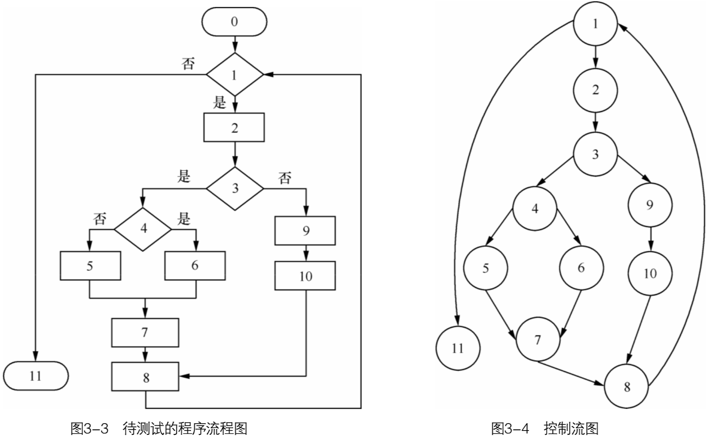实例：判断是否是闰年
当年份能够被 4 但不能被 100 整除时为闰年，或者年份能够被 400 整除时为闰年，据此可以设计判断输入的年份是否为闰年的 C 语言程序代码，具体代码如下：
|
|
通过分析上述代码画出程序的流程图和控制流程图。
|
|
图中，一共有10条边、8个节点、4个域，其中判定节点有3个，分别是1、3、4，程序的圈复杂度为4。
根据圈复杂度可以得到4条独立的路径，具体如下：
路径1：1→2→8
路径2：1→3→4→6→8
路径3：1→3→4→7→8
路径4：1→3→5→8
根据这4条独立路径即可设计测试用例。
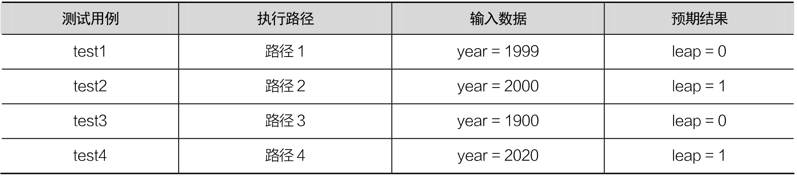实例：while循环+if循环
根据下列代码，绘制程序流程图，控制流程图，计算程序的圈复杂度，设计测试用例。
|
|
实例：更复杂的控制流程图
根据代码右侧的步骤注释绘制控制流程图，计算程序的圈复杂度。
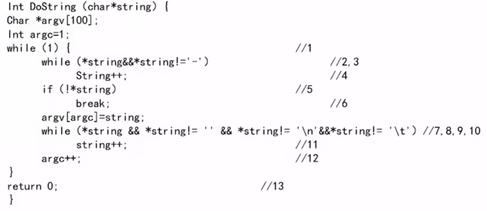逻辑覆盖法
语句覆盖
语句覆盖（Statement Coverage）又称行覆盖、段覆盖、基本块覆盖，它是最常见的覆盖方式之一。
语句覆盖的目的是测试程序中的代码是否被执行，它只测试代码中的执行语句，这里的执行语句不包括头文件注释、空行等。
语句覆盖在多分支的程序中只能覆盖某一条路径，使得该路径中的每一个语句至少被执行一次，不会考虑各种分支组合的情况。
现有程序伪代码如下：
|
|
根据程序伪代码可以画出流程图：
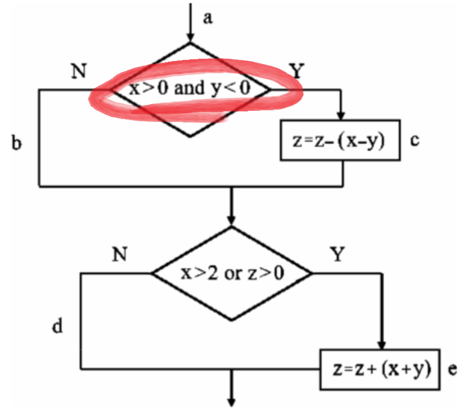图中，a、b、c、d、e表示程序执行分支，Y表示条件成立，N表示条件不成立。在语句覆盖测试用例中，应使程序中的每个可执行语句至少被执行一次，根据图中标示的语句执行路径设计测试用例，具体如下。
|
|
执行上述测试用例，程序的执行路径为 a→>c→e。
可以看出程序中 a→c→e 路径上的每个语句都能被执行，但是语句覆盖无法全面反映多分支的逻辑，仅仅执行一次不能进行全面覆盖。因此，语句覆盖是弱覆盖方法。
语句覆盖虽然可以测试执行语句是否被执行，但无法测试程序中存在的逻辑错误，例如，如果上述程序中的逻辑判断符号 “and” 误写成 “or”，使用测试用例 test1 同样可以覆盖 a→c→e 路径上的全部执行语句，但无法发现错误。
同样，如果将 x>0 误写成 x>=0，使用同样的测试用例 test1 也可以执行 a→c→e 路径上的全部执行语句，但无法发现 x>=0 的错误。
语句覆盖无须详细考虑每个判断表达式，可以直观地在源程序中有效测试执行语句是否全部被覆盖。由于程序在设计时语句之间存在许多内部逻辑关系，而语句覆盖不能发现其中存在的缺陷，所以语句覆盖并不能满足白盒测试中测试所有逻辑语句的基本需求。
判定覆盖
判定覆盖（Decision Coverage）又称为分支覆盖，其原则是设计足够多的测试用例，在测试过程中保证每个判定条件至少有一次为真值、有一次为假值。
判定覆盖的作用是使真假分支均被执行，虽然判定覆盖比语句覆盖测试能力强，但仍然具有与语句覆盖一样的单一性。
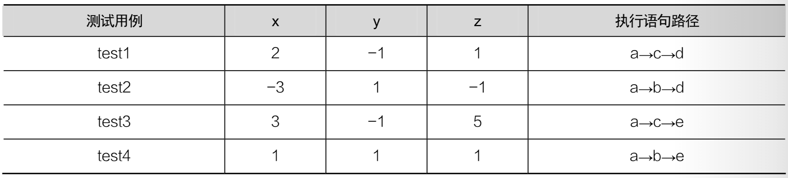由表可知，这 4个测试用例分别覆盖了 a→c→d、a→b→d、a→c→e、a→b→e执行语句路径，使得每个判定条件的取值满足了各有一次真与一次假。相比于语句覆盖，判定覆盖的覆盖范围更广。
判定覆盖虽然保证了每个判定条件至少有一次为真值、有一次为假值，但是没有考虑到程序内部的取值情况，例如测试用例 test4，没有将 x>2 作为条件进行判断，仅仅判断了条件 z>0。
判定覆盖语句一般是由多个逻辑条件组成的，如果仅仅判断测试程序执行的最终结果而忽略每个条件的取值，必然会遗漏部分测试路径。因此，判定覆盖也属于弱覆盖。
条件覆盖
条件覆盖（Condition Coverage）是指设计足够多的测试用例，使判定语句中的每个逻辑条件取真值与取假值至少出现一次，例如，对于判定语句（a>1 or c<0）中存在 a>1 和 c<0 这 2 个逻辑条件，设计条件覆盖测试用例时，要保证 a>1、c<0 的真值、假值至少出现一次。
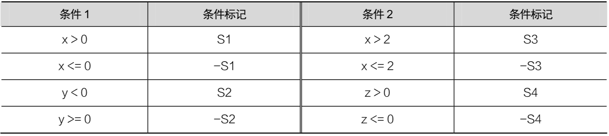设计测试用例时，要保证每种状态至少出现一次。
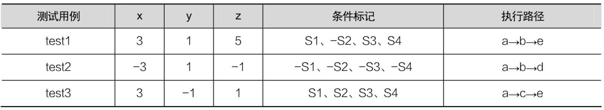可以看出，S1、S2、S3、S4、-S1、-S2、-S3、-S4 都至少出现了一次，但执行路径没有覆盖到 a→c→d。
判断——条件覆盖
判定——条件覆盖（Decision-Condition Coverage）要求设计较多的测试用例，使得判定语句中所有条件的可能取值至少出现一次，同时，所有判定语句的可能结果也至少出现一次。
例如，对于判定语句 if(a>1 and c<1)，该判定语句有 a>1、c<1 这2个条件，则在设计测试用例时，要保证 a>1 和 c<1 这 2 个条件取真值、假值至少一次，同时，判定语句 if(a>1and c<1) 取真值、假值也至少出现一次。判定——条件覆盖弥补了判定覆盖和条件覆盖的不足之处。
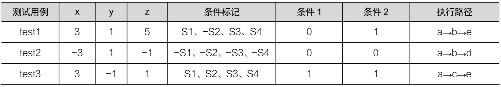相比条件覆盖、判定覆盖，判定——条件覆盖弥补了前两者的不足，但是由于判定——条件覆盖没有考虑判定语句与条件判断的组合情况，其覆盖范围并没有比条件覆盖更全面，判定——条件覆盖也没有覆盖 a→c→d 路径，因此判定——条件覆盖也存在遗漏测试的情况。
条件组合覆盖
条件组合覆盖（Multiple Condiion Coverage）是指设计足够多的测试用例，使判定语句中每个条件的所有可能情况至少出现一次，并且每个判定语句本身的判定结果也至少出现一次。
它与判定——条件覆盖的区别是它不是简单地要求每个条件都出现真与假 2 种结果，而是要求让这些结果的所有可能组合都至少出现一次。
以上述程序为例，程序中共有4个条件：x>0、y<0、x>2、z>0。S1、S2、S3、S4 表示条件成立，-S1、-S2、-S3、-S4 表示条件不成立。
S1 和 S2 属于同一个判定语句，有 4 种组合情况：S1/S2、S1/-S2、-S1/S2、-S1/-S2；
S3 和 S4 属于同一个判定语句，有 4 种组合情况：S3/S4、S3/-S4、-S3/S4、-S3/-S4。
在执行程序时，只要能分别覆盖2个判定语句的组合情况即可（出现一次），因此，条件组合覆盖至少要 4 个测试用例。
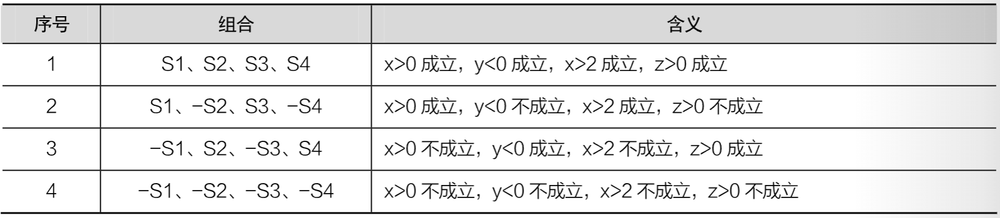设计测试用例如下：
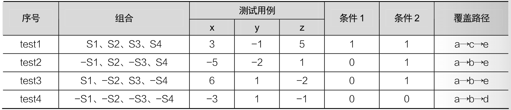与判定——条件覆盖相比，条件组合覆盖包括了所有判定——条件覆盖，因此它的覆盖范围更广。但是当程序中的条件比较多时，条件组合的数量会呈线性增长，组合情况非常多，要设计的测试用例也会增加，这样反而会使测试效率降低。
实例：三角形的判定覆盖
根据三角形三边关系可知可能出现4种情况：不构成三角形、一般三角形、等腰三角形、等边三角形。据此实现一个判断三角形的程序。
程序插桩法
程序插桩法是一种被广泛使用的软件测试技术,简单来说，程序插桩法就是往被测试程序中插入测试代码，以达到测试目的的方法，插入的测试代码被称为探针。根据测试代码插入的时间不同可以将程序插桩法分为目标代码插桩和源代码插桩。
目标代码插桩
目标代码插桩是指向目标代码（即二进制代码）插入测试代码，以获取程序运行信息的测试方法，也称为动态程序分析方法。在进行目标代码插桩之前，测试人员要对目标代码的逻辑结构进行分析，从而确认需要插桩的位置。
目标代码插桩对程序运行时的内存监控、指令跟踪、错误检测等有着重要意义。相比于逻辑覆盖法，目标代码插桩在测试过程中不需要重新编译代码或链接程序，并且目标代码的格式与具体的编程语言无关，主要与操作系统相关，因此目标代码插桩被广泛使用。
目标代码插桩的原理
目标代码插桩的原理是在程序运行平台和底层操作系统之间建立中间层，通过中间层检查执行程序、修改指令，开发人员、软件分析工程师等对运行的程序进行观察，判断程序是否被恶意攻击或者出现异常行为，从而提高程序的整体质量。
目标代码插桩的两种方式
由于目标代码是可执行的二进制代码，所以目标代码的插桩可分为两种方式。
第1种方式是对未运行的目标代码插桩，首先从头到尾插入测试代码，然后执行程序。这种方式适用于需要实现完整系统或仿真（模拟真实系统）时进行的代码覆盖测试。
第2种方式是向正在运行的程序插入测试代码，用来检测程序在特定时间的运行状态信息。
目标代码插桩的执行模式
目标代码插桩具有以下3种执行模式。
（1）即时模式（Just-In-Time Mode）
原始的二进制或可执行文件没有被修改或执行，将修改部分的二进制代码以副本的形式存储在新的内存区域中，在测试时仅执行修改部分的目标代码。
（2）解释模式（Interpretation Mode）
在解释模式中目标代码被视为数据，测试人员插人的测试代码作为目标代码指令的解释语言。每当执行一条目标代码指令时，程序就会在测试代码中查找并执行相应的替代指令，测试通过替代指令的执行信息就可以获取程序的运行信息。
（3）探测模式（Probe Mode）
探测模式使用新指令覆盖旧指令进行测试，这种模式在某些体系结构（如x86体系结构）中比较适用。
目标代码插桩工具
由于目标程序是可执行的二进制文件，人工插人代码是无法实现的，所以目标代码插桩一般通过相应的插桩工具实现，插桩工具提供的 API（Application Program Interace，API）可以为用户提供访问指令。
常见的目标代码插桩工具主要有 Pin-A Dynamic Binary Instrumentation Tool（Pin）和 DynamoRIO。
源代码插桩
源代码插桩是指对源文件进行完整的词法、语法分析后，确认插桩的位置，插入探针代码（测试代码）。相比目标代码插桩，源代码插桩具有针对性和更高的精确性，实现复杂度更低。
|
|
为了监视除法运算中的除数输入是否正确，在第14行插入宏函数ASSERT(y==0)，当除数为0时输出错误原因、出错文件、出错所在行的行号等提示信息。宏函数 ASSERT(y)中使用了C语言标准库的宏定义 “__FILE__” 提示出错文件、"__LINE__" 提示文件出错位置。
程序运行后，提示输入被除数和除数，在输入除数后，程序的宏函数ASSERT(y)判断除数是否为0，若除数为0则输出错误信息，程序运行结束；若除数不为0，则进行除法运算并输出计算结果。根据除法运算程序设计测试用例，除法运算测试用例如下表所示。
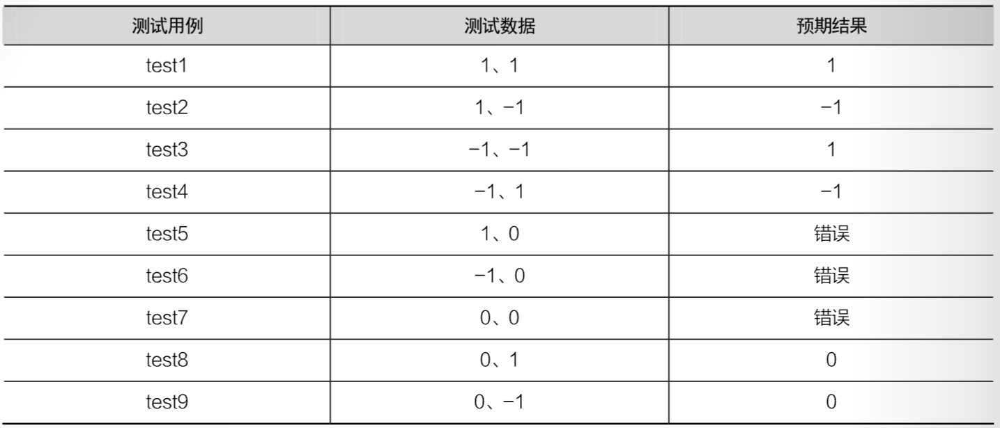对插桩后的 C语言源程序进行编译、链接，生成可执行文件并执行，然后输入表中的测试数据，可以观察测试用例的实际执行结果与预期结果是否一致。
程序的目标代码插桩与源代码插桩测试方法有效提高了代码测试覆盖率，但是使用插桩测试方法会出现代码膨胀、执行效率低下、HeisenBugs等问题。一般情况下插桩后的代码膨胀率在 20%~40%，甚至能达到100%，导致插测试失败。
黑盒测试和白盒测试的异同
测试目标
黑盒测试过程中不用考虑程序内部的逻辑结构，仅仅需要验证程序外部功能是否符合用户实际需求。黑盒测试可以发现以下3种类型的缺陷。
- 外部逻辑功能缺陷，例如界面显示信息错误、输入框中无法输入内容等
- 兼容性错误，例如系统版本不支持、运行环境不支持等。
- 性能问题，例如运行速度慢、响应时间长等。
白盒测试与黑盒测试不同，白盒测试可以设计测试用例尽可能覆盖程序中的分支语句，用于分析程序内部的逻辑结构。白盒测试常用于以下2种情况。
- 源程序中含有多个分支，在设计测试用例时要尽可能覆盖所有分支，提高测试覆盖率。
- 检查内存泄漏。黑盒测试只能在程序长时间运行中发现内存泄漏问题，而白盒测试能立即发现内存泄漏问题。
测试阶段
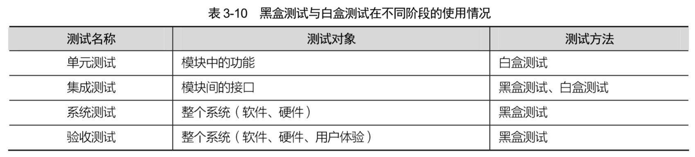黑盒测试与白盒测试在不同的测试阶段的使用情况也不同，在测试过程中，黑盒测试与白盒测试结合使用会大幅提升软件测试质量。
本章习题
填空题
-
语句覆盖的目的是测试程序中的代码是否被执行，它只测试代码中的（ 执行语句 ）。
-
（ 判定覆盖 ）的作用是使真、假分支均被执行。
-
（ 条件覆盖 ）是指判定语句中的每个条件都要取真值、假值各一次。
-
对于判定语句 if(a>1 and c<1)，测试时要保证 a>1、c<1 两个条件取真值、假值至少一次，同时，判定语句 if(a>1 and c<1)取真值、假值也至少一次，这使用了（ 判断——条件 ）覆盖方法。
-
（ 条件组合覆盖 ）要求判定语句中所有条件取值的可能组合至少出现一次。
判断题
-
语句覆盖无法考虑分支组合情况。（ √ ）
-
语句覆盖可以测试程序中的逻辑错误。（ × ）
-
判定——条件覆盖没有考虑判定语句与条件判断的组合情况。（ × ）
-
圈复杂度用来衡量一个模块判定结构的复杂程度。（ √ ）
选择题
-
下列选项中，哪一项不属于逻辑覆盖法（ D ）？
-
A. 语句覆盖
-
B. 条件覆盖
-
C. 判定覆盖
-
D.判定——语句覆盖
-
-
关于逻辑覆盖法，下列说法中错误的是（ C ）。
-
A.语句覆盖的语句不包括空行、注释等
-
B.相比于语句覆盖，判定覆盖考虑到了每个判定语句的取值情况
-
C.条件覆盖考虑到了每个逻辑条件的取值的所有组合情况
-
D.在逻辑覆盖法中，条件组合覆盖是覆盖率最大的测试方法
-
-
关于圈复杂度的计算，下列说法中正确的是（ D ）。
-
A. 圈复杂度的数量等于控制流图中的节点数量
-
B. 使用 V(G)=P+1 可以计算圈复杂度，其中 P 表示控制流图中边的数量
-
C. 使用 V(G)=E-N+2 可以计算圈复杂度，其中 E 表示控制流图中节点的数量，N 表示控制流图中边的数量
-
D. 圈复杂度等于控制流图中的区域数量
-